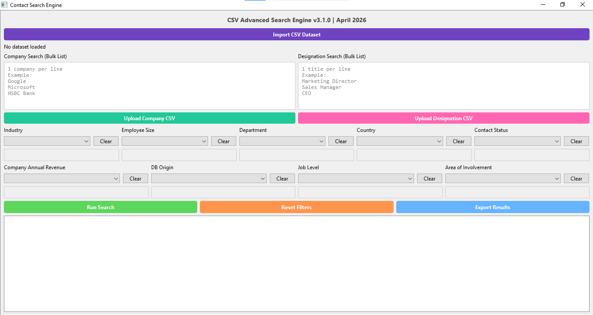

This project came from a frustration I kept hitting in my daily work. I deal with CRM exports constantly, files from Vtiger, Zoho, Lusha, Pipeleads, and once they reach 50K to 100K+ rows, searching becomes painful. Excel breaks, filters lag, and even simple queries like find all marketing managers in these 200 companies can take hours of manual filtering. I needed something faster, but more importantly, something built specifically for messy lead data.
So I built my own desktop tool: a CSV Advanced Search Engine designed to handle large datasets, normalize messy inputs, and return results instantly.
At its core, the system starts simple, load a CSV and map columns, but the real work happens after that. Once a dataset is imported, the engine normalizes company names and job titles into structured formats. Instead of relying on raw text, it breaks company names into brand roots and removes weak tokens like Inc, Ltd, and Group, so HSBC Holdings Ltd and HSBC Bank can be treated as the same entity. This step alone fixes one of the biggest issues in CRM data: inconsistent naming.
For job titles, I built a classification system that extracts both function, sales, marketing, IT, and so on, and seniority level, manager, director, C-level. It uses keyword mapping and weighted rules to convert messy titles like Head of Digital Growth into structured categories. This allows filtering not just by text, but by intent, something Excel simply cannot do.
The biggest performance gain came from how search is handled. Instead of scanning the dataset every time, the system builds indexes upfront and uses vectorized filtering. When a user inputs a bulk company list, sometimes 100 to 500 companies at once, the engine extracts only the strong keywords and filters using a fast lookup on precomputed company roots. This avoids expensive fuzzy matching and keeps performance predictable even at scale.
For designation search, I took a different approach. Since job titles vary more, the system dynamically builds regex patterns that match multiple keywords per line. For example, Marketing Director becomes a pattern requiring both words. This allows flexible but controlled matching across thousands of rows without sacrificing speed.
On the UI side, I focused on workflow efficiency. Users can paste bulk search lists directly or upload CSVs, and inputs are auto-numbered to avoid mismatches. Filters are handled through multi-select dropdowns with summaries, and results are capped to a 500-row preview for speed, while still allowing full export of all matched data. This keeps the interface responsive even when working with large datasets.
In real usage, the results were immediate. Searches that used to take 1 to 3 hours manually now run in seconds, even on datasets exceeding 40K to 100K rows. The tool consistently handles large files without crashing, and because it is built with indexing and normalization in mind, performance scales much better than traditional tools.
What makes this project strong is not just speed, it is context awareness. It understands that Google Inc. and Google are the same, that Head of Sales and Sales Director belong to the same function, and that bulk searches should work as easily as single queries. It is not a generic search tool, it is built specifically for CRM data problems.
In the end, this turned into a tool I can rely on daily. What used to be a slow, manual filtering process is now a structured, repeatable workflow. Instead of spending hours cleaning and searching data, I can focus on analysis and decision-making. And that shift, from manual effort to system-driven efficiency, is where the real value comes from.
